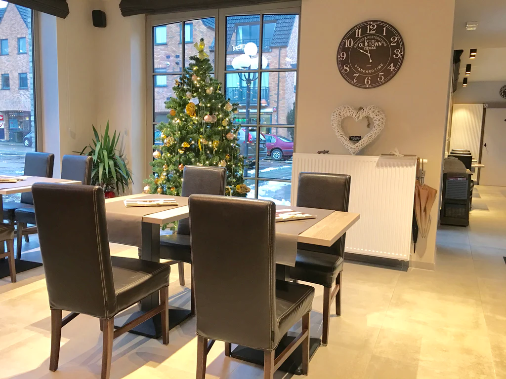

Welkom bij Brasserie Devaux

Sabine Knockaert
Devaux
Onze brasserie biedt een gezellig interieur en een hartelijk onthaal. Onze menu kaart biedt een ruime keuze aan dranken, waaronder wijn, frisdranken, bier, koffie en andere warme dranken. We serveren ook verse pannenkoeken, wafels en ambachtelijke ijscoupes, evenals huisbereide voor- en hoofdgerechten, salades en snacks zoals croques, toasts, omeletten, lasagne en spaghetti.
Openingstijden
Maandag tot donderdag van 9.30u - 17.30u
Vrijdag van 9.30u - 17.00u
Zaterdag en zondag gesloten